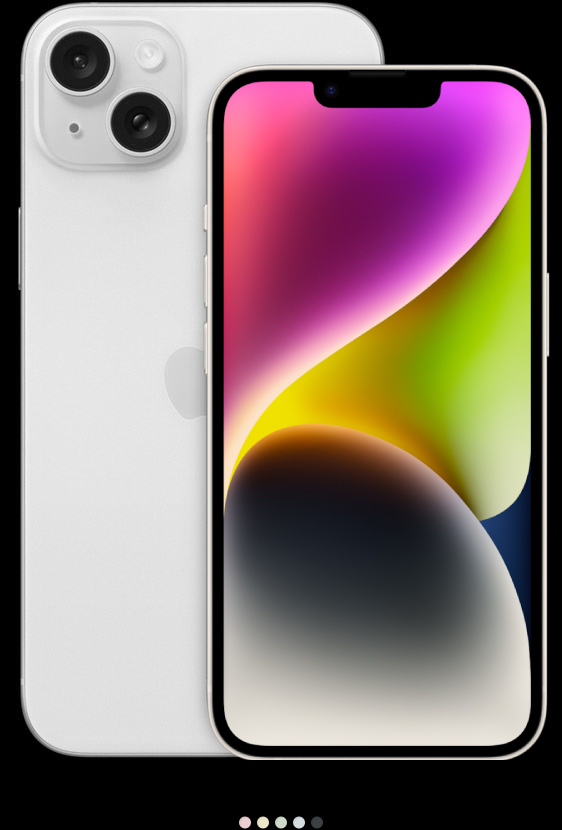

6.7 inç veya 6.1 inç
Super Retina XDR ekran
ProMotion Teknolojisi
Hep açık ekran
A17 Pro
6 çekirdekli GPU'ya sahip A17 Pro çip
Pro kamera sistemi
48 MP Ana kamera | Ultra Geniş | Telefoto
Süper yüksek çözünürlüklü fotoğraflar (24 MP ve 48 MP)
Odak özelliğine ve Derinlik Denetimi'ne sahip yeni nesil portreler
29 saate kadar video oynatma

6.7 inç veya 6.1 inç
Super Retina XDR ekran
-
-
A16 Bionic
5 çekirdekli GPU'ya sahip A16 Bionic çip
Gelişmiş çift kamera sistemi
48 MP Ana kamera | Ultra Geniş
Süper yüksek çözünürlüklü fotoğraflar (24 MP ve 48 MP)
Odak özelliğine ve Derinlik Denetimi'ne sahip yeni nesil portreler
26 saate kadar video oynatma

6.7 inç veya 6.1 inç
Super Retina XDR ekran
-
-
A15 Bionic
5 çekirdekli GPU'ya sahip A15 Bionic çip
Çift kamera sistemi
12 MP Ana kamera | Ultra Geniş
-
Odak özelliğine ve Derinlik Denetimi'ne sahip Portre Modu


{kind=link}
{kind=link}
Yorumlar.
Sizin için önemli olan Apple için de önemli
Can T.
iPhone 15 Pro, fotoğrafçılar için bir hayal gibi. Gece modu ve yüksek çözünürlüklü kamerası sayesinde mükemmel anlar yakalamak artık çok kolay. Keskin ve canlı renklerle dolu fotoğraflar çekebiliyorum.
Melis S.
iPhone 15 Pro ile tanıştığımda, beni büyüleyen ilk şey şık ve ince tasarımı oldu. Kamera kalitesi beni büyüledi ve hızlı performansı sayesinde tüm görevlerimi sorunsuz bir şekilde yerine getirebiliyorum.
Berkay A.
İş gereksinimlerimi karşılayan bir telefon ararken iPhone 15 Pro'yu buldum. Yüksek kapasiteli depolama, güçlü işlemci ve güvenliğe odaklanmış bir işletim sistemi ile tam bir profesyonel cihaz.